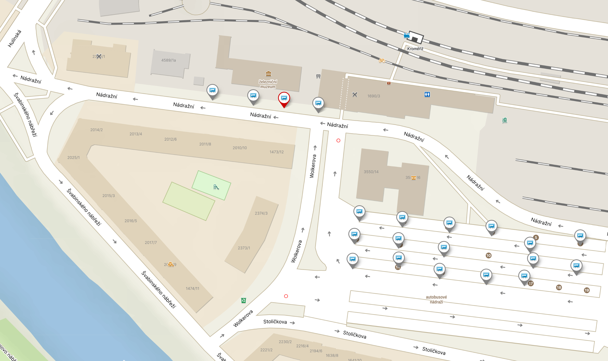

A s kým?
Snoubenci
Zuzana Jarošová a Jan Řihošek

A proč?
Proto쬰 se chceme vzít a chceme, abyste s námi byli u toho. 仇벒잺仇벒잺仇벒잺
Informace o svatbě
- Místo obřadu: Louka na dvoře u Bílého stromu (I v případě nepříznivého počasí bude obřad uvnitř v předsálí)
- Čas obřadu: 11:00
- Svatební hostina: Dvůr u Bílého stromu
- Svatební oběd: 12:30
- Adresa: Chropyňská, Kroměříž
Organizační info před a k obřadu
- Nabídněte si něco z přichystaného občerstvení a vyberte si mávátko. :)
- Svatebčani nevěsty, a콘 se postaví či posadí na levou stranu od slavobrány, 쬰nichova strana napravo.
- Počítáme, 쬰 obřad bude trvat max. 20 minut.
- Po skončení obřadu prosím udělejte špalír, nyní je chvíle pro vyu쬴tí mávátek, jak budeme odcházet od slavobrány. :)
- Pak si společně uděláme hromadnou fotku a poté mohou přijít na řadu gratulace. (obálky poté m콢쬰te dát do truhlice uvnitř svatebního sálu hned u vstupu).
- Daleko však prosím neodcházejte ani po gratulacích - bude svatební focení s Vámi jako jednotlivci! Postavte se tedy prosím do řady a udělejte si s námi fotku. :)
- Pak u přichází uvítání od pana provozovatele, rozbití tal칤콏e a přesouváme se všichni do sálu, kde se bude podávat oběd. :)
- Následující program po obědě ji najdete na svatebním harmonogramu uvnitř. :)
A jak to tam vypadá?


A jak se tam dostaneme?
Počítejte prosím s vlastní dopravou.
Přímo na místě je dostatek parkovacích míst.
Doprava městskou hromadnou dopravou
Je to mo쬹ost, na svatebním místě budete cca. hodinu před obřadem. Zastávka je přímo u svatebnímo místa a jmenuje se Horní Zahrady, Za Včelínem. Autobus číslo 5 vyj칤쬯칤 z hlavního nádra쮂 9:44.
Pokud budete chtít v Krom캩콏칤쬴 doporučit tipy na ubytování, dejte nám vědět. :-)
Odvoz ze svatby
Na svatbě bude jedna obsluha navíc, která bude fungovat jako řidič pro mo쬹칳 odvoz ze svatby.
Pokud budete toho chtít vyu쮂셦, počítejte, 쬰 bude fungovat jako taxi, tzn. na칰캜tuje Vám pak cenu za ujeté kilometry. Maximální vzdálenost pro rozvoz je Zlín.
A jak to bude s dětmi na svatbě?
Děti jsou na naší svatbě srdečně vítány! ❤️
Abychom vše dobře naplánovali, budeme rádi,
kdy nám dopředu dáte vědět, jestli přijdou s vámi.
A také zda budete pro ně chtít plnohodnotnou nebo dětskou porci k obědu.
Jídlo, preference
Pokud máte nějakou dietu, alergii nebo cokoliv dalšího, co bychom měli vědět pro výběr svatebního menu, dejte nám prosím vědět!
A jaký bude program?
Program
11:00 Obřad - při hezkém počasí venku na louce
12:30 Oběd
14:00 Krájení dortu + sladký bar
15:00 Focení novoman쬰lů
17:00 První tanec novoman쬰lů
17:30 Raut
19:00 Svatební kvíz: zvedání bot
19:30 Další zábavný program pro hosty
20:00-? Párty a další hry pro zabavení